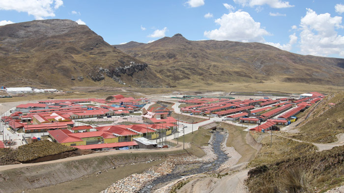

|
回目录 回主页 |

图片：中铝收购秘鲁特罗莫乔铜矿后，为搬迁户在附近建造了新村 十年前，我写过一篇文章：《为什么跨国公司一到中国就污染？》。一个中国环保机构在收集整理污染企业名单时，意外发现有许多跨国公司也赫然在册。在一般人印像中，国外的企业相当重视环保，怎么到了中国就变了呢？《参考消息》的子报《国际先驱论坛报》在报导中写道：“环境污染已成中国经济运行中的一个突出问题，跨国公司在其中也扮演了极不光彩的角色。……一个值得玩味的细节是，大部分上了名单的跨国公司，在本国都拥有良好的声誉，保护环境甚至已成了这些企业的竞争优势之一。但到了中国，却因环保问题广受诟病，真的是‘橘生淮南为橘，生淮北为枳’吗？个别跨国公司看来已经深谙这个中国古代的典故。‘我们的邻居比我们还差’，已经成了它们堂而皇之的借口和理由。”——这个典故用得好，同样是橘树，生长在淮河以南跟生长在淮河以北味道就变了。“南橘北枳”的典故缘自春秋时期的一段故事：齐国的重臣晏婴出使楚国，楚王令人把一个盗贼拉到迎宾宴会上，说是齐国人。问晏婴说：是不是你们齐国人生来就喜欢偷盗？晏婴就说了“南橘北枳”那句著名的话，然后解释道：为什么会这样呢？水土异也。人出生于齐国不盗，到了楚国就盗，岂不是因为楚国的水土把好人变成盗贼了吗！ 时至今日，中国的企业也纷纷走出国门，跑到非洲、南美投资建厂，这个“南橘北枳”的效应也起了作用。原来在中国野蛮污染的企业，到了大洋彼岸竟然变乖了。比如，中国铝业去南美秘鲁开采铜矿，表现之好令人难以相信。首先，不带一个中国工人，一万多就业机会全部提供给当地人。此外，还“好吃好招待”，给当地工人提供带洗澡间带电视的单人房间，职工食堂有烧鸡、炸鸡、菜花、玉米、点心、水果。还有娱乐设施、医疗团队。据中铝秘鲁公司副总裁介绍，一万多人的大矿区，平均每人每天要吃一只鸡，“光是这一万多只鸡就为周边的居民提供了很多就业机会。”无微而不至，想得多周到啊！ 据腾讯评论刊载的《中资企业在秘鲁为何不敢乱污染》报导，中铝收购了这个铜矿以来，连续数年没正式产出一吨铜。原因何在？要搞好与当地的关系。为保护环境，保护水源，在一滴污水未排放的情况下，先期投入5000多万美元，用两年时间建了一座现代化的污水处理厂，为社区拓宽供水管道。当地原来是一个肮脏破败的小镇，居民住的是土房，使用公共的水龙头和厕所。为了取得“土著”对铜矿的支持，中铝居然斥资2亿多美元，建了一座现代化新城。自来水、淋浴、马桶、医院、教堂、市场、小学、托儿所、警察局、市政厅、游乐园、残障通道、公共垃圾箱、还建了一座可容纳5000人的多功能体育馆。迁入的家庭将拥有房屋的产权，不是仅有几十年的居住权。如此尽善尽美，又斥资5000万美元的搬迁费。——以一个正常人的逻辑来看，这简直是献媚讨好了。 为什么？——中资企业的国际名声已经被自己搞坏了。在此之前，一些中国商人到加纳开采黄金，无视加纳政府的法规，破坏了当地受保护的森林及可可农场，并污染了河川，遭到加纳政府严厉打击。被驱逐出境的中国人达4500之多。中国铝业显然吸取了此类教训，开始放下身段。中铝秘鲁公司负责人说：“我们希望有一个好结果。” 那末，结果好吗？似乎不那么美好。尽管中铝前期投入如此巨大，但当地居民并不满足于住进新城，还要求3亿美元的补偿。除此，他们还要工作保障、教育计划以及铜矿的股份。中铝在试产阶段露出了污染的苗头，收到环保部门禁令，立即乖乖停止生产。想当初，中铝在国内何等嚣张：他们不仅拒不执行环保部门要求公开污染物信息的指令，在“限期整改”期间还是照样污染。渡过了海洋，他们就立地成佛了。 看到这个报导，中国的网民便炸了。跟帖将近1万，几乎清一色的都是咒骂： “妈的，在生你养你的祖国，就被污染得遍体鳞伤！” “这帮孙子，在国内那么蛮横，说到底全是政府给纵容的！” “他妈的！还好吃好喝带单间浴室！在国内你爱吃不吃的地沟油大锅饭，爱住不住的窝棚集体宿舍，还他妈一个劲儿压榨工资、污染环境！” “尼玛，真的无语，只会坑自己人，拿着在中国捞的血泪钱去国外搞环保。妈的，你们在国内的污染，谁为你们买单？在国外你们怎么不动用警察、城管和黑社会呢？” “中铝是中国国企一个典型、在国内靠垄断压榨国民的血汗钱、破坏国内的环境、去国外当土豪做孙子、这些都是大领导以这些项目来洗黑钱、国家领导人是心知肚明的也是一伙的！中国无药可治！” 骂人不好，但不骂就连最起码的道义感都没有了。有一位叫“中菲”的人说到了点上：“因为秘鲁人是土地真正的主人，而中国人只是土地的租户……” 让我们来算个粗略的账： 建新城一座：2.17亿美元； 建污水处理厂一座：5000多万美元； 搬迁费：5000多万美元； 再加上其他未说明的前期投入，共计15亿美元。 相比之下，中铝购买秘鲁特罗莫克铜矿采矿权不过也就花了8亿多美元。 ——赔本的买卖没人做。那么是否意味着，即便花两倍于购买采矿权的钱用于善待环境与民众，这个买卖还能有赚？想一想他们在国内的作为，那真是敲骨吸髓！ 来源：自由亚洲 作者：郑义 |
回目录 回主页 |